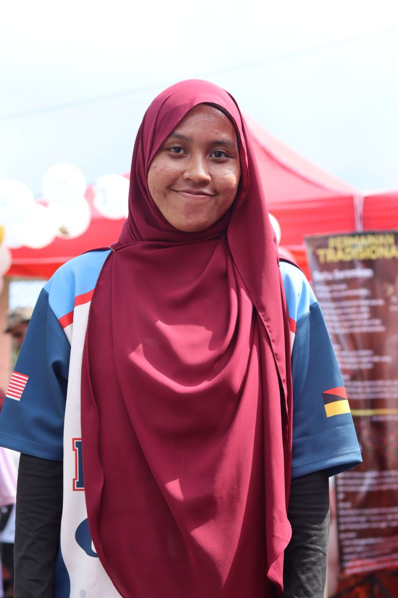

|
|
|  |
During my two semesters as a Secretariat of the Majlis Perwakilan Pelajar, I gained valuable knowledge and unforgettable experiences while making new friends from different branches. Being part of this role taught me how to communicate confidently, work in a team, and manage tasks responsibly. I am also an EXCO Kebajikan in the Information Management Community (IMCo), where I learned empathy, leadership, and how to care for others’ welfare. In addition, serving as the Program Director for my Final Year Project helped me strengthen my planning, problem-solving, and time management skills. These experiences have shaped me into a more organized, responsible, and adaptable individual who enjoys working with people and facing new challenges with confidence 🌱